AI Engineer | AI Plumber | Practical problems meet data & AI 🤖💾
|
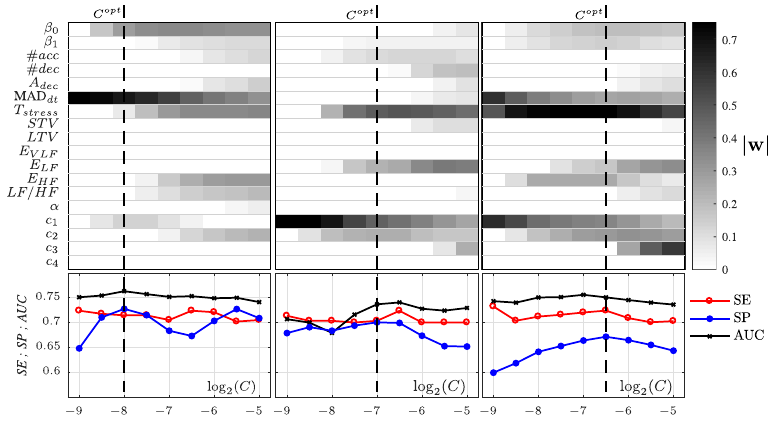 |
P. Abry, J. Spilka, R. Leonarduzzi, V. Chudáček, N. Pustelnik, M. Doret
Sparse learning for Intrapartum fetal heart rate analysis
In Biomedical Physics Engineering Express 4(3) 034002, 2018.
web | .pdf | .bib | paper results |
|
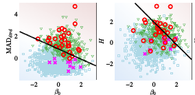 |
J. Spilka, J. Frecon, R. Leonarduzzi, N. Pustelnik, P. Abry, M. Doret
Sparse Support Vector Machine for Intrapartum Fetal Heart Rate Classification
In IEEE Journal of Biomedical and Health Informatics, 21(3), 664 - 671, 2017.
web | .pdf | .bib |
|
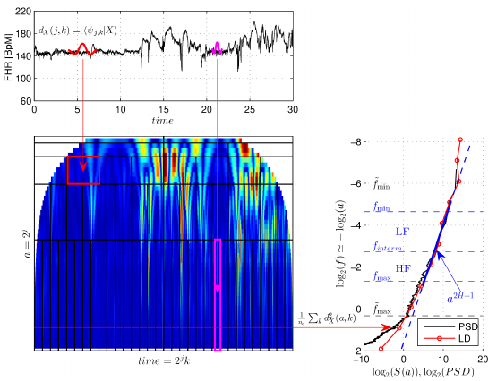 |
M. Doret, J. Spilka, V. Chudáček, P. Goncalves, P. Abry
Fractal Analysis and Hurst Parameter for Intrapartum Fetal Heart Rate Variability
Analysis:
A Versatile Alternative to Frequency Bands and LF/HF Ratio
In PLoS ONE, vol. 10, no. 8, p. e0136661, 08 2015. web | .pdf | .bib |
|
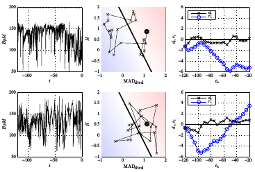 |
J. Spilka, J. Frecon, R. Leonarduzzi, N. Pustelnik, P. Abry, M. Doret
Intrapartum Fetal Heart Rate Classification from Trajectory in Sparse SVM feature space
In Ann Int Conf IEEE Eng Med Biol Soc (EMBC), Milan, Italy, August 2015, pp. 2335--2338. web | .pdf | .bib |
|
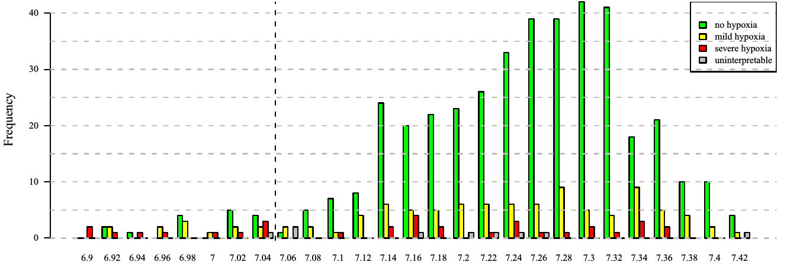 |
L. Hruban, J. Spilka, V. Chudáček, P. Janků, et al.
Agreement on intrapartum cardiotocogram recordings between expert obstetricians
In Journal of Evaluation in Clinical Practice, 21(4): 694-702, 2015. web | .pdf | .bib |
|
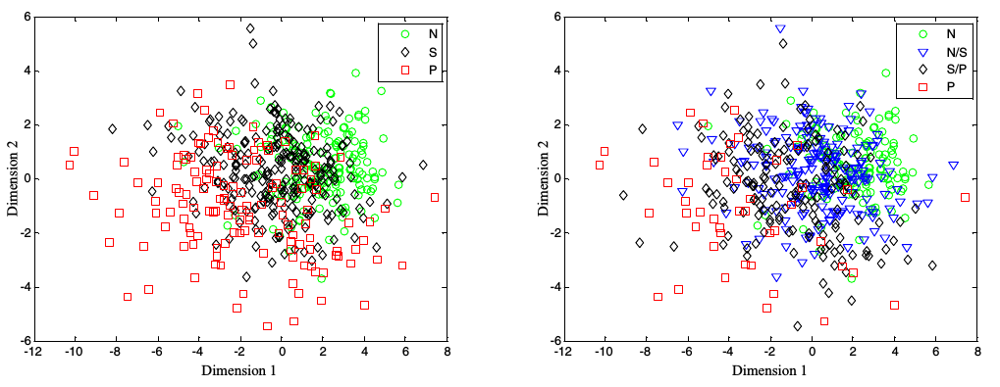 |
P. Karvelis, J. Spilka, G. Georgoulas, V. Chudáček, C. Stylios, L. Lhotská
Combining Latent Class Analysis Labeling with Multiclass Approach for Fetal Heart Rate Categorization
In Physiological Measurement 36, 1001-1024, 2015. web | .pdf | .bib |
|
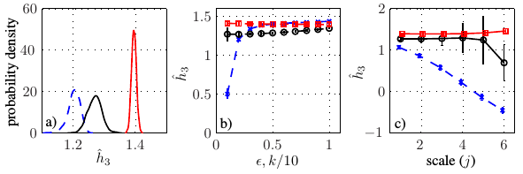 |
J. Spilka, S.G. Roux, N.B. Garnier, P. Abry, P. Goncalves, and M. Doret
Nearest-neighbor based wavelet entropy rate measures for intrapartum fetal heart rate variability
In Engineering in Medicine and Biology Society (EMBC), 2014 36th Annual International
Conference of the IEEE, 2813–2816, IEEE, 2014. web | .pdf | .bib |
|
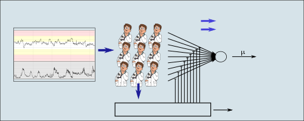 |
J. Spilka, V. Chudáček, P. Janků, L. Hruban, M. Burša, M. Huptych, L. Zach, L. Lhotská.
Analysis of obstetricians' decision making on CTG recordings.
Journal of Biomedical Informatics 2014, 51:72-79, 2014 web | .pdf | .bib |
|
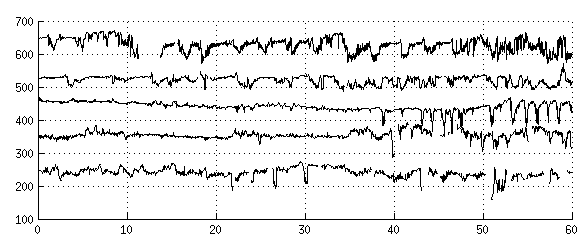 |
V. Chudáček, J. Spilka, M. Burša, P. Janků, L. Hruban, M. Huptych, L. Lhotská.
Open access intrapartum CTG database.
BMC Pregnancy and Childbirth 2014 14(1):16, 2014. web | .pdf | .bib |
|
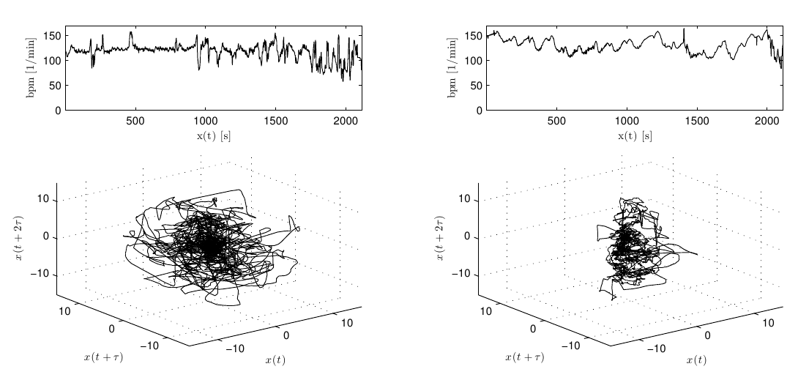 |
J. Spilka, V. Chudáček, M. Koucký, L. Lhotská, M. Huptych, P. Janků, G. Georgoulas, C. Stylios.
Using nonlinear features for fetal heart rate classification.
Biomedical Signal Processing and Control 7(4):350–357, 2012. web | .pdf | .bib |
|
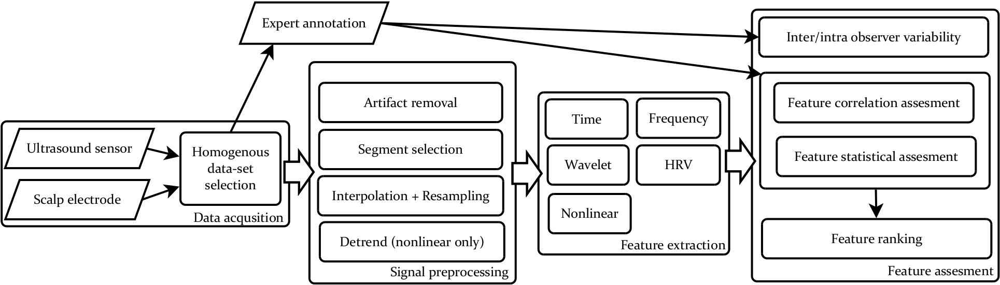 |
V. Chudáček, J. Spilka, P. Janků, M. Koucký, L. Lhotská, and M. Huptych.
Automatic evaluation of intrapartum fetal heart rate recordings:
A comprehensive analysis of useful features.
Physiological Measurement 32:1347–1360, 2011. web | .pdf | .bib |
|
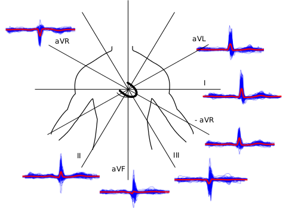 |
J. Spilka, V. Chudáček, V. Kužílek, L. Lhotská, and M. Hanuliak.
Detection of Inferior Myocardial Infarction: A Comparison of Various Decision Systems
and Learning Algorithms.
In Computers in Cardiology volume 37, 2010 web | .pdf | .bib |